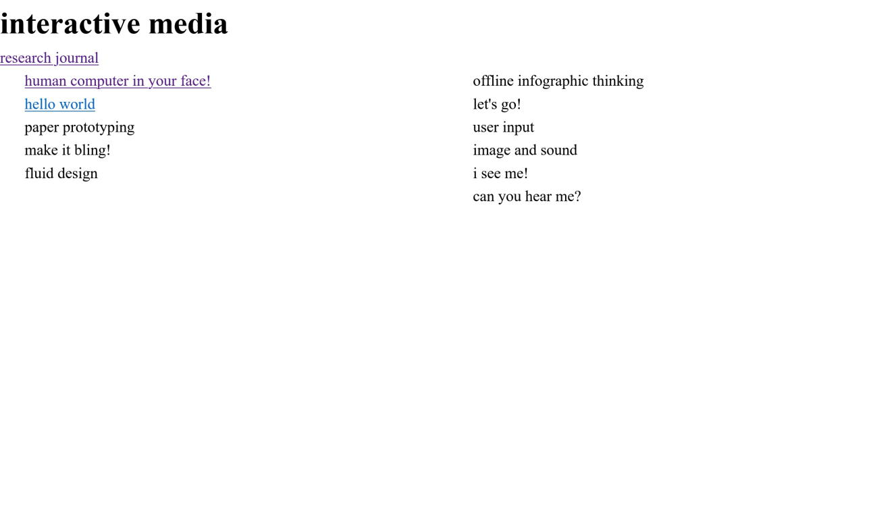
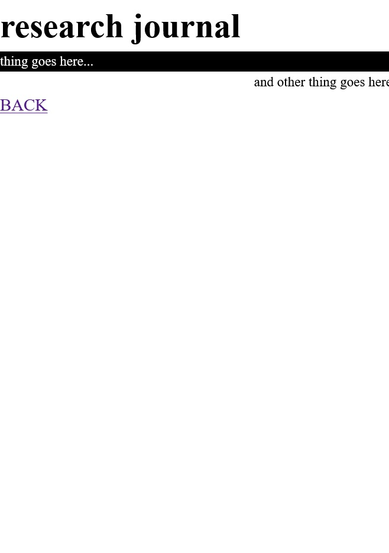

<!DOCTYPE html>
<html lang="en">
  <head>
    <meta charset="UTF-8" />
    <meta http-equiv="X-UA-Compatible" content="IE=edge" />
    <meta name="viewport" content="width=device-width, initial-scale=1.0" />
    <title>jennifer nguyen | gdes30008</title>
    <link rel="stylesheet" href="/../../stylesheet-appearance.css" />
    <link rel="stylesheet" href="/../../stylesheet-layout.css" />
    <script src="scripts.js"></script>
  </head>
</html>

<body>
  <h1>hello world</h1>

  <h2>head/body/spirit</h2>
  <p>As an exercise, I tried to draw</p>

  <p>
    As I took some UI/UX design classes previously as part of my major, I
    already had VSCode set up on my laptop and an understanding of the process
    of developing a webpage, from wireframes to writing the frontend code. For
    Week 1, I decided to forgo any detailed CSS styling in favour of setting up
    the basic layout for my workbook and research journal and adding in
    rudimentary information.
  </p>

  

  <p>
    Out of habit from my prior coding projects, I made the site layout
    responsive so that it could also be viewed and interacted with on mobile.
    While the two columns display side-by-side on desktop, they are stacked on
    top of each other on mobile screens.
  </p>

  
  <a href="/../../index.html">BACK</a>
</body>
